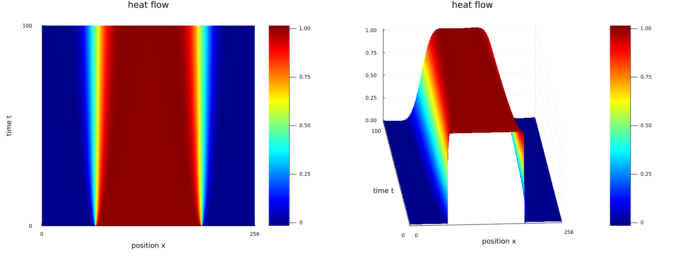
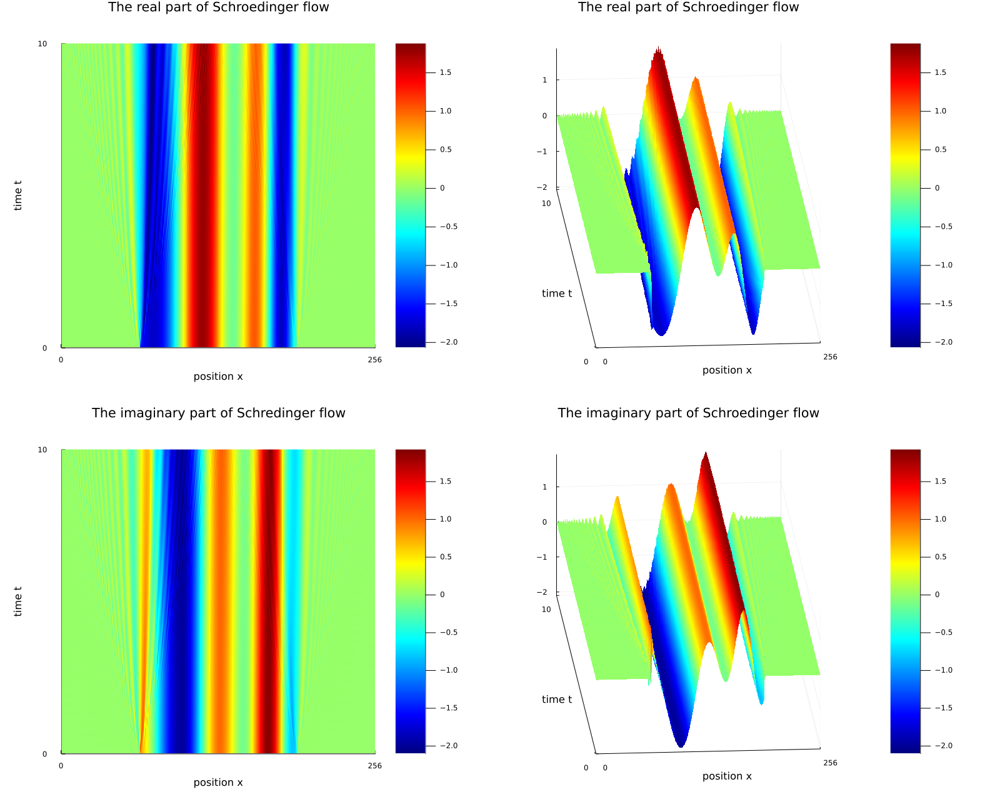
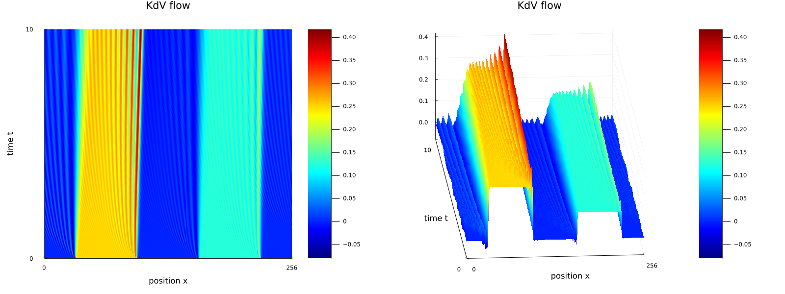
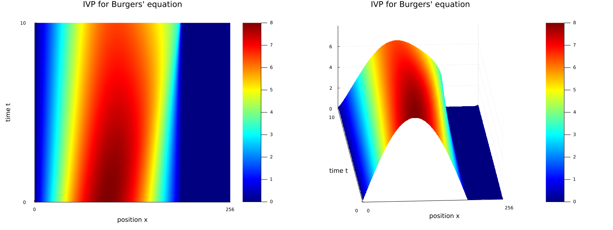
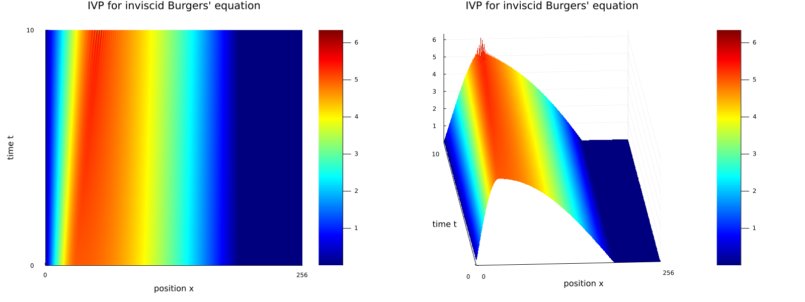

Solving PDEs with FFT
Using the finite discrete Forier transform we can solve some problems for some partial differential equations.
-
The heat equation \(u_t-u_{xx}=0\)
(heat.jl).

-
The Schrödinger evolution equation \(u_t-\sqrt{-1}u_{xx}=0\)
(schroedinger.jl).

-
The linear part of the Korteweg de Vries equation \(u_t+u_{xxx}=0\)
(lkdv.jl).

-
The Korteweg de Vries equation \(u_t+u_{xxx}+3(u^2)_x=0\)
(kdv.jl).

-
Burgers' equation \(u_t-u_{xx}+uu_x=0\)
(burgers.jl).

-
Inviscid Burgers' equation \(u_t+(u^2)_x/2=0\)
(iburgers.jl).
